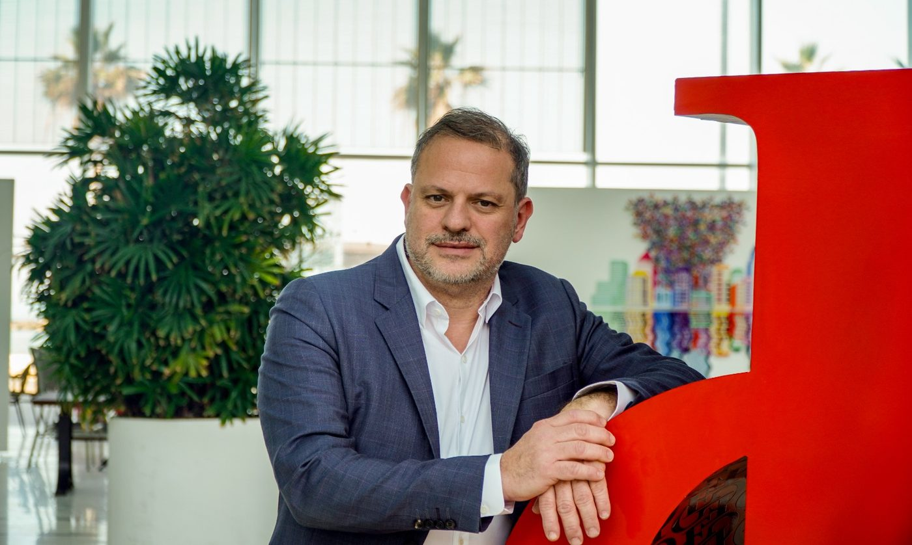

Le cabinet et son approche
Une date de départ envisagée, une vente en cours, une société conservée en France, un conjoint qui vous rejoindra plus tard : nous partons de votre situation réelle. Elle détermine les questions fiscales à traiter et les décisions à examiner avant l’installation.
Notre travail consiste à relier les règles fiscales à vos choix concrets : conserver une société, organiser votre rémunération, vendre un actif, préparer une transmission ou établir votre nouvelle résidence. Nous distinguons les décisions immédiates, les vérifications à poursuivre et les obligations qui accompagneront votre départ.

Me Georges-David Benayoun
Avocat au Barreau de Paris, spécialiste en droit fiscal et douanier, Me Georges-David Benayoun accompagne les particuliers, les dirigeants et les familles dans l’analyse de leurs enjeux fiscaux. Au sein du cabinet CBA, l’expatriation est abordée à partir de la situation personnelle, professionnelle et patrimoniale du client.
Décrire votre situation avant d’en tirer une conclusion fiscale
Nous examinons l’organisation réelle de votre vie, la nature de vos revenus, la propriété de vos actifs et les pouvoirs que vous exercez. Une même destination peut appeler des analyses différentes selon le lieu de vie du conjoint, le fonctionnement de la société ou le calendrier d’une cession.
Un périmètre de travail défini avec vous
Selon votre besoin, l’intervention peut porter sur une consultation, un audit avant départ, une opération déterminée ou le suivi des obligations françaises. Nous précisons le périmètre de la mission, les informations nécessaires et les conditions d’intervention avant son engagement. Les questions à examiner en France et celles qui appellent une vérification du droit israélien sont identifiées.
Présentez-nous votre projet
Indiquez votre date de départ envisagée et les décisions déjà prises. Quelques faits précis permettent de préparer un premier échange utile.
Demander un rendez-vous consultation16, avenue du Président Kennedy, 75016 Paris
Téléphone : +33 (0)1 44 96 55 55
Courriel : info@cbavocats.com